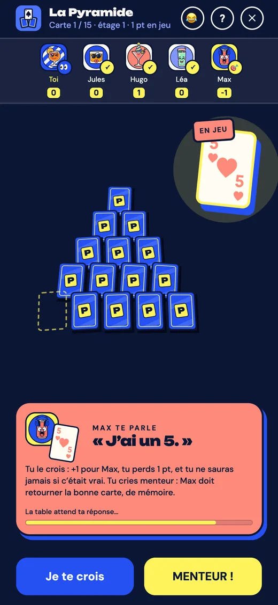

Bluff et mémoire
Bluff et mémoire
La Pyramide : le jeu de bluff et de mémoire entre amis
Tu bluffes. Il te grille.
Jouer sur iPhone
En deux mots : La Pyramide est un jeu de bluff et de mémoire pour 2 à 8 joueurs, inclus gratuitement dans l'app iPhone PAFOU. Chacun mémorise 4 cartes, puis 15 cartes sont révélées une à une. À chaque carte, tu peux affirmer à un ami que tu as la même valeur, que ce soit vrai ou non. S'il crie « Menteur », tu dois le prouver de mémoire.
- Joueurs
- 2 à 8
- Durée
- environ 20 minutes
- Téléphones
- chacun le sien, ou un seul qui passe de main en main
- Accès
- Toujours gratuit
En bref
- Un jeu de bluff : tu peux mentir sur tes cartes, il faut juste ne pas te faire prendre.
- Un jeu de mémoire : tes 4 cartes sont retournées, tu ne les revois plus.
- 2 à 8 joueurs, une vingtaine de minutes, sans matériel.
- Toujours gratuit dans PAFOU, sur plusieurs téléphones ou un seul.
Comment se joue La Pyramide ?
La Pyramide se joue en cinq temps. Tout le monde suit la même carte en même temps, chacun sur son téléphone.
- Tu mémorises 4 cartes. Chaque joueur reçoit 4 cartes, les range comme il veut et les retient. Quand tout le monde est prêt, elles sont retournées. Plus personne ne les revoit.
- 15 cartes sont révélées une à une. Elles forment une pyramide de cinq étages. Plus on monte, plus l'étage vaut cher.
- Tu affirmes, vrai ou pas. À chaque carte révélée, tu peux dire à un pote que tu as la même valeur dans ta main. Tu peux dire la vérité. Tu peux aussi bluffer.
- Il te croit, ou il crie « Menteur ». S'il te croit, tu gagnes 1 point et il perd les points de l'étage. S'il crie « Menteur », tu dois retourner la bonne carte parmi tes 4, de mémoire.
- La preuve tranche. Bonne carte : 2 points pour toi, et il perd l'étage. Mauvaise carte : 2 points pour lui, et c'est toi qui perds l'étage.
Après la quinzième carte, le podium tombe, avec des titres comme « Roi ou Reine du bluff » et « Pigeon de la soirée ».
Pourquoi c'est un bon jeu de bluff entre amis ?
Parce que le mensonge et la mémoire se mélangent. Même quand tu dis la vérité, tu dois te souvenir de la place de ta carte. Un joueur honnête qui a mal retenu sa main perd autant qu'un menteur démasqué. Résultat : tout le monde doute de tout le monde, y compris de soi.
Chaque tour ne concerne que deux joueurs, mais toute la table regarde. C'est ce qui fait monter le bruit : on prend parti, on se souvient du bluff d'avant, on règle ses comptes au tour suivant.
Peut-on jouer avec un seul téléphone ?
Oui. En créant la partie, choisis « Un seul tél ». Le téléphone passe de main en main : chacun regarde ses cartes à son tour, à l'abri des regards. C'est pratique quand tes potes n'ont pas tous l'app, ou pas tous un iPhone.
À plusieurs téléphones, tu crées un salon et tu partages le code ou le QR code. La partie avance en même temps chez tout le monde.
D'où vient le jeu de la pyramide ?
La pyramide est un jeu de cartes de soirée très connu en France, qui se joue d'habitude avec un vrai paquet de 52 cartes. La version de PAFOU garde le cœur du jeu, le bluff et la preuve par la mémoire, et s'occupe du reste : distribution, comptage des points, tour de parole. Si tu cherches les règles avec un vrai paquet, on les détaille dans les règles du jeu de la pyramide.
Et après la Pyramide ?
Les points s'additionnent sur toute la soirée quand tu changes de jeu. Tu peux enchaîner avec Les Dossiers pour faire parler la table, ou comparer avec d'autres jeux de bluff entre amis.
Questions fréquentes
La Pyramide est-elle gratuite ?
Oui. La Pyramide fait partie des jeux toujours gratuits de PAFOU, avec les fléchettes. L'app se télécharge gratuitement sur l'App Store.
À combien peut-on jouer à La Pyramide ?
De 2 à 8 joueurs. Le jeu est plus drôle à partir de 4, quand on peut choisir sa cible.
Faut-il un jeu de cartes ?
Non. Les cartes sont dans l'app : la distribution, la pyramide et les points sont gérés par le téléphone.
Est-ce un jeu à boire ?
Non. La Pyramide de PAFOU se joue aux points. Une option « verre », facultative et réglée par chaque joueur, existe avec ou sans alcool, mais le jeu fonctionne entièrement sans.